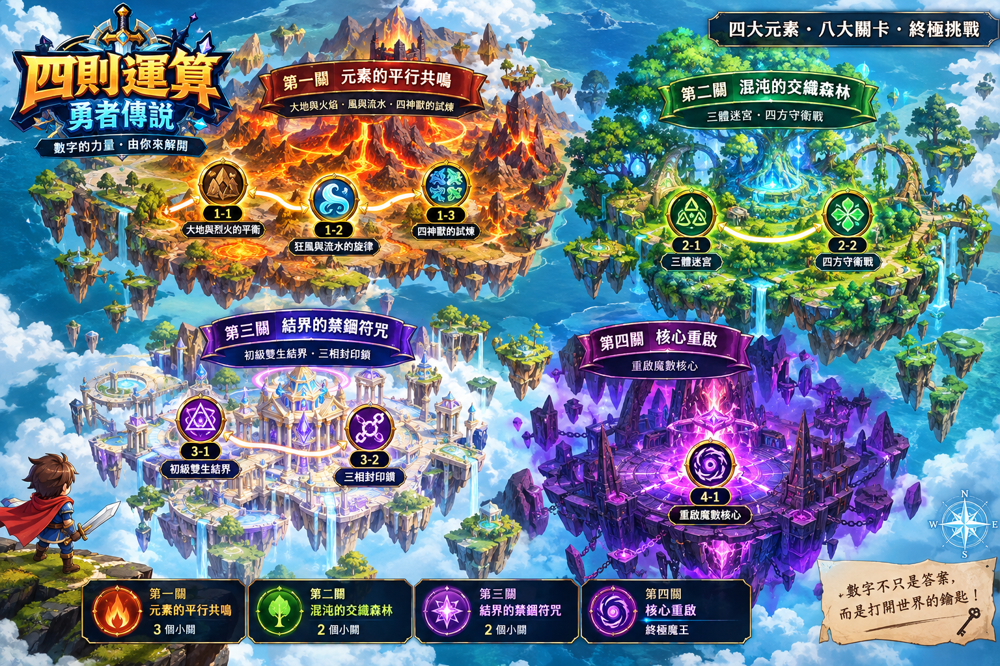

💰 0
四則運算勇者傳說
遊戲規則： 擊敗地圖上所有地方的怪物！
✨ 怪物10滴血，每答對一題打1滴，答錯加0.5血（所以 10 題全對剛好打倒）。
✨ 勇者4滴血，答錯扣1血，每題都有限時（越後面的關卡，時間越長）。
✨ 時間加成： 越快答對，星星越多。
🎮 兩種玩法： ⚡快速版＝直接輸入答案；🧮教學版＝先點「要最先算的符號」，再一步一步算，算式會越變越短。兩種模式的進度各自獨立。
📖 答錯會有解說： 看完解說、按「確定」才會進下一題。
✨ 道具： 連對5題獲得「甦醒藥」(死後自動滿血復活)。
挑戰全關卡 5 星評價吧！
🌍 四則運算勇者傳說 - 關卡選擇
點一下發亮的關卡，勇者就會走過去！


勇者 HP: ❤️❤️❤️❤️
🧪 甦醒藥 x1
關卡 1-1
第一關 街道
怪物
10 / 10
四則勇者
連擊: 0
1 × 1 = ?
剩餘時間: 60s
準備戰鬥！
黑道老大與混混小弟們
我的答案
?
任務日誌
答錯了
一步一步來看：
你填錯的地方：